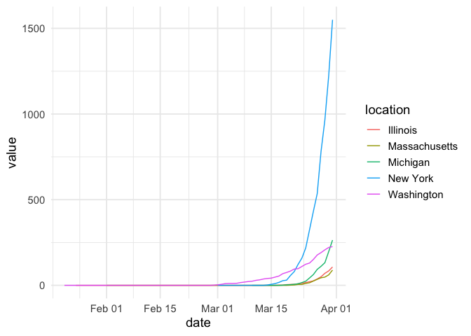

The covid19nytimes package harvests the data made freely available by the New York Times. See https://www.nytimes.com/article/coronavirus-county-data-us.html for more.
Installation
You can install the released version of covid19nytimes from CRAN with:
Or the latest development version from github
Data
The package has the data from states and counties. The package comes with static data that was downloaded at the time of the last package update.
| date | location | location_type | location_standardized | location_standardized_type | data_type | value |
|---|---|---|---|---|---|---|
| 2020-01-21 | Washington | state | 53 | fips_code | cases_total | 1 |
| 2020-01-21 | Washington | state | 53 | fips_code | deaths_total | 0 |
| 2020-01-22 | Washington | state | 53 | fips_code | cases_total | 1 |
| 2020-01-22 | Washington | state | 53 | fips_code | deaths_total | 0 |
| 2020-01-23 | Washington | state | 53 | fips_code | cases_total | 1 |
| 2020-01-23 | Washington | state | 53 | fips_code | deaths_total | 0 |
| date | location | location_type | location_standardized | location_standardized_type | data_type | value |
|---|---|---|---|---|---|---|
| 2020-01-21 | Snohomish,Washington | county_state | 53061 | fips_code | cases_total | 1 |
| 2020-01-21 | Snohomish,Washington | county_state | 53061 | fips_code | deaths_total | 0 |
| 2020-01-22 | Snohomish,Washington | county_state | 53061 | fips_code | cases_total | 1 |
| 2020-01-22 | Snohomish,Washington | county_state | 53061 | fips_code | deaths_total | 0 |
| 2020-01-23 | Snohomish,Washington | county_state | 53061 | fips_code | cases_total | 1 |
| 2020-01-23 | Snohomish,Washington | county_state | 53061 | fips_code | deaths_total | 0 |
Columns
The data follows the covid19R standard for tidy Covid-19 data. The data columns are as follows:
- date - The date in YYYY-MM-DD form
- location - The name of the location as provided by the data source. The counties dataset provides county and state. They are combined and separated by a
,, and can be split bytidyr::separate(), if you wish. - location_type - The type of location using the covid19R controlled vocabulary. Nested locations are indicated by multiple location types being combined with a `_
- location_standardized - A standardized location code using a national or international standard. In this case, FIPS state or county codes. See https://en.wikipedia.org/wiki/Federal_Information_Processing_Standard_state_code and https://en.wikipedia.org/wiki/FIPS_county_code for more
- location_standardized_type The type of standardized location code being used according to the covid19R controlled vocabulary. Here we use
fips_code - data_type - the type of data in that given row. Includes
total_casesandtotal_deaths, cumulative measures of both. - value - number of cases of each data type
Sample visualization
library(dplyr)
#>
#> Attaching package: 'dplyr'
#> The following objects are masked from 'package:stats':
#>
#> filter, lag
#> The following objects are masked from 'package:base':
#>
#> intersect, setdiff, setequal, union
library(ggplot2)
covid19nytimes_states %>%
filter(location %in% c("Washington", "New York", "Massachusetts", "Michigan", "Illinois")) %>%
filter(data_type == "deaths_total") %>%
ggplot(aes(x = date, y = value, color = location)) +
geom_line() +
theme_minimal(base_size=14) +
scale_y_continuous()